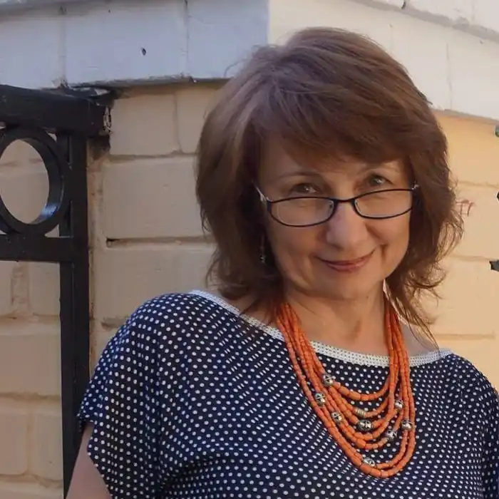

Іванцова Людмила Петрівна (нар. 27 листопада 1960) — українська письменниця, перекладач, журналіст та педагог.
Міла Іванцова народилась і виросла в Києві, за освітою – викладач російської мови і літератури та французької мови. Викладала французьку в школі, Ліцеї туризму, Інституті туризму ФПУ, має досвід перекладацької та журналістської роботи.
У зрілому віці почала писати вірші, оповідання. Роман "Родовий відмінок" отримав номінацію "Вибір видавців" у літературному конкурсі "Коронація слова – 2009". Роман "Гра в паралельне читання" увійшов у трійку творів-переможців цього ж конкурсу в 2012 році. Наразі автор має у творчому доробку сім романів, книгу-повість для підлітків про спортсменів "Заради мрії", участь у трьох збірках-антологіях сучасних авторів, переклад роману парижанки Дельфін де Віган "Підземні години". Її твори були відзначені у рейтингах "Книга року Бі-бі-сі" та "Книга року журналу "Кореспондент"". У 2012 році нагороджена відзнакою "Золотий письменник України". Міла Іванцова – активна громадська діячка, багатогранна творча особистість. Створила соціальний проект "100 книжок для сільської бібліотеки", була активісткою безпрецедентної "Бібліотеки Майдану" під час Революції гідності, також створила цілу серію авторських розписних шоломів. Позитивістка. Оптимістка. Патріотка. Любить дерева, квіти, цікавих креативних людей.